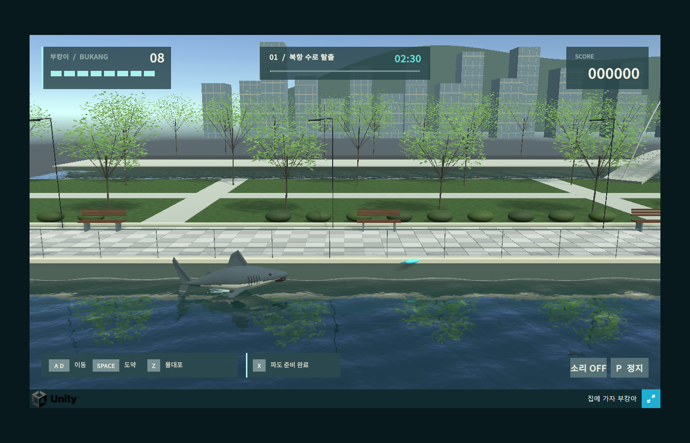
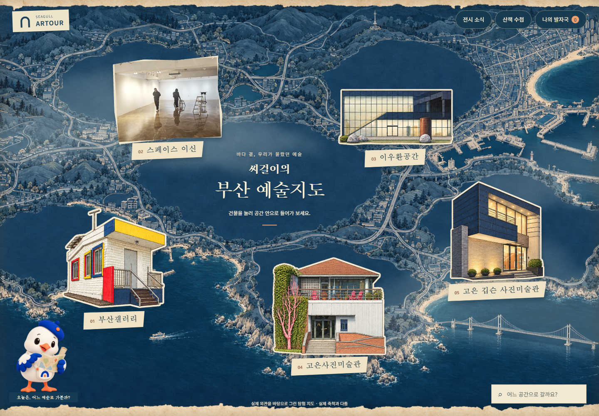
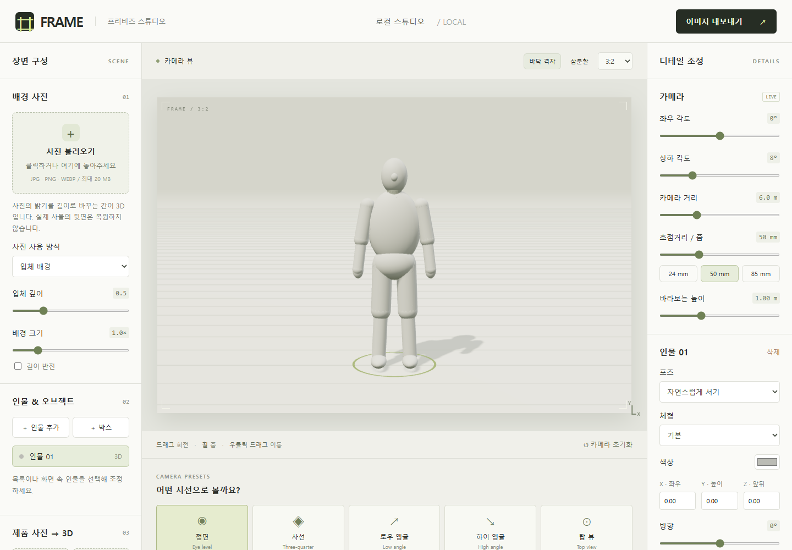
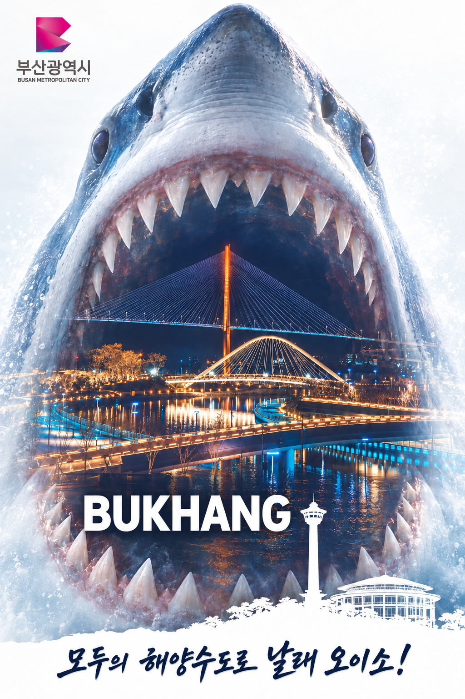

path: ~/contents/projects
projects: 4
SESSION_01 / SELECTED PROJECTS
AI로 만들고, 연결한 것들
부산을 무대로 만든 게임과 예술지도, 콘텐츠 캠페인, 장면을 설계하는 프리비즈 도구를 모았습니다.

preview ↗
[01] / GAME PROTOTYPE
집에 가자 부캉아
북항 수로를 헤엄치는 부캉이의 횡스크롤 액션 게임. 부산의 친수공원을 재구성한 3D 공간에서 물대포와 파도를 사용해 수로를 탈출합니다.
- 구현
- Unity 6 · 3D · WebGL / Windows
- 설계
- 다섯 유형의 관람객 · 150초 뒤 보스 등장
제작 내용 보기
수면 반사와 굴절, 물보라와 항적을 구현하고 이동·도약·물대포·파도·일시정지를 구성했습니다. 실제 북항친수공원의 풍경을 게임의 동선에 맞춰 재해석했습니다.
현재는 실행 화면을 공개합니다. 대용량 게임 빌드의 웹 배포는 준비 중입니다.

preview ↗
[02] / INTERACTIVE ART MAP
씨걸이의 부산 예술지도
건물을 누르면 그 공간의 장면으로 들어가는 부산 예술 탐험 지도. 씨걸이와 함께 다섯 예술 공간의 방문 안내와 전시 소식, 이어 걷기 좋은 코스를 발견합니다.
- 경험
- 지도 → 공간 → 방문·전시·산책 정보
- 기능
- 날짜별 전시 탐색 · 가고 싶은 곳 저장
제작 내용 보기
부산갤러리, 스페이스 이신, 이우환공간, 고은사진미술관, 고은 깁슨 사진미술관을 연결했습니다. 실제 공간 사진과 건축 그림을 함께 사용하고 자료의 출처를 안내합니다.
로그인 없이 자유롭게 둘러볼 수 있습니다. 운영·전시 정보는 2026.10.19 조사 기준입니다.
예술지도 열기 ↗
channels ↗
[03] / FIVE-CHANNEL CAMPAIGN
아르투어부산 5채널 캠페인
부산의 예술과 여행을 하나의 브랜드로 연결한 콘텐츠 캠페인. 같은 주제를 채널별 화면비와 읽는 방식에 맞춰 카드뉴스, 숏폼, 블로그 기록으로 풀어냈습니다.
- 채널
- Instagram · YouTube · Naver Blog · X · Facebook
- 제작
- 브랜드 비주얼 · 카드뉴스 · 세로형 영상

launch ↗
[04] / BROWSER CREATIVE TOOL
FRAME 프리비즈 스튜디오
사진과 3D 마네킹, 제품을 배치해 촬영 구도를 설계하는 브라우저 도구. 카메라 각도와 초점거리, 화면비를 조절하고 완성한 장면을 PNG로 저장할 수 있습니다.
- 도구
- Three.js · 2.5D 사진 배경 · 3D 장면 편집
- 처리
- 사진은 브라우저 안에서 처리 · API 키 불필요
제작 내용 보기
앞·뒤 사진을 적용한 제품의 두께와 크기를 조절하고 마네킹의 손에 배치할 수 있습니다. 배경의 입체감은 사진 밝기를 이용한 간이 깊이 표현이며, 실제 3D 스캔을 대신하지 않습니다.
path: ~/contents/visual-developmentworks: 2
SESSION_02 / VISUAL DEVELOPMENT
이미지로 먼저 그린 이야기
캐릭터의 세계관을 정리하고, 부산의 풍경을 새로운 시각으로 재구성한 초기 디자인과 포스터 작업입니다.
[01] / INITIAL CHARACTER IP
부산에 떨어진 뿌
우주선 고장으로 부산에 불시착한 외계인 뿌가 음식과 사투리, 예술과 온천을 낯선 시선으로 만나는 로컬 관찰 예능 IP입니다. 호기심 많은 탐험가의 성격과 성장 아이템, 표정과 세계관을 초기 캐릭터 시트로 정리했습니다.
[02] / TOURISM POSTER STUDIES
부산 홍보 포스터
북항의 야경을 상어의 형상과 결합한 이미지와, 세일러 캐릭터를 앞세운 관광 홍보 이미지입니다. AI 이미지로 부산의 장소성과 캐릭터를 연결해 본 포스터 제작 실습입니다.

북항 · 모두의 해양수도로 놀러 오이소!↗부캉이의 도시, 부산!↗path: ~/contents/ai-practicevideos: 8
path: ~/contents/idol-practicevideos: 3
SESSION_04 / IDOL PRACTICE
AI 아이돌 제작 연습
무대 영상과 캐릭터 퍼포먼스를 실사·3D 스타일로 실험했습니다. 인물의 표정과 포즈, 스타일 변화와 화면 연출을 살펴보는 세 편입니다.
path: ~/contents/story-filmsvideos: 2
path: ~/contents/action-previzvideos: 2
SESSION_06 / ACTION PREVIZ
액션 프리비즈에서 장면으로
단순한 입체 도형으로 액션의 동선과 타이밍을 설계한 뒤, 캐릭터와 공간 레퍼런스를 더한 영상 실험으로 연결했습니다.
캐릭터와 장소 레퍼런스
영상과 함께 사용한 두 캐릭터의 시트와 스카이브리지 공간 이미지입니다.